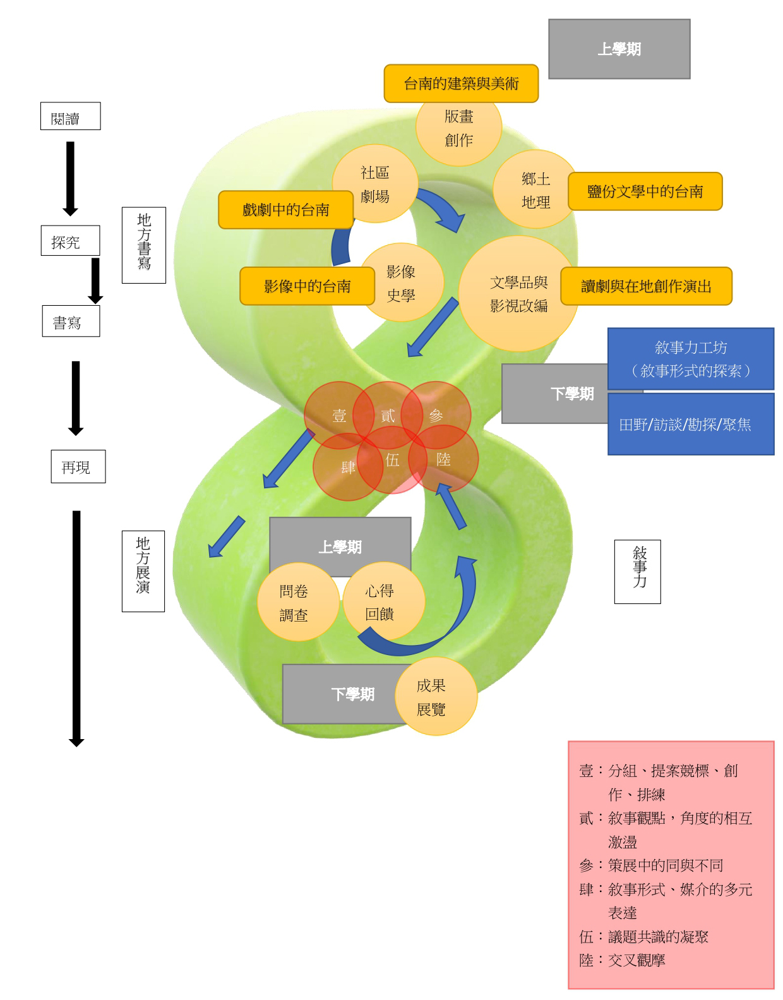

-摘要-
本論文主要聚焦於探討跨領域的人文藝術教師（包括：國語文學系、視覺藝術與設計學系、戲劇創作與應用學系和文化與自然資源學系的共六位老師），如何透過社群討論來研發出跨領域的地方風土藝文通識教育的統整型課程，企圖初步梳理出這個創新課程相關的參考理論之間的關連與邏輯，這些理論包括：後現代藝術教育理念，跨領域統整課程的理念和實例，以地方為基礎的學習和教育模式，敘事力的研究以及議題探究教學法的研究，並探討教師社群如何透過討論來統整以上這些相關文獻理論的概念，化為精彩而有挑戰性的新創課程的教學內容和教學策略與創新教學的方法和學生學習成果的預計和評估等教學的實際內容與面向，目前這些新創課程仍然還在生成與醞釀中，希望藉著論文中所討論的一些初步的發現與成果，還有共同的省思與問題，透過這篇初探的論文發表，能與更多教師和學界先進交流精進。
關鍵字：通識教育、風土藝文教育、跨領域統整課程、敘事力研究、以地方為基礎的教育

-摘要-
經過約三個月的跨領域交叉共學，互相觀摩和社區場域的互訪，以及三股社區劇場展演及三股社區版畫創作展覽的觀賞交流，本計劃的課程教師們建立了對台南濱海地區的自然環境、歷史人文及產業發展等多方面向的共同基礎知識了解，同時也親身體驗了鹽分地帶的風土特色及藝文創作特質，從而經過討論，建立了對本課程發展的教學目標及課程內容與對濱海地區特有議題的共識及共同的探索方向和問題意識，在這些共創共學的歷程中，我們發展出了課程設計架構如下圖。
我們所共同關心的課程隨即轉移到我們該如何跨領域地共同教學？才能使異質的跨領域的師生們能夠透過課程中的跨領域教學及引導策略，達到跨領域的藝文創作和教育的教學目標？培養出學生們能夠跨領域思考、並彼此對話構思、設計及執行出小組中多元的風土藝文創作和教育的方案？在社區和學校中展演和展覽？這篇初探論文就是本團體共同思索以上幾個迫切課題的一些初步發現，初步分成「融合閱讀地方與探究地方的跨領域與敘事力基礎課程」、「從探究地方到書寫地方的教學策略」及「從書寫地方到再現地方」三個階段來仔細分析和呈現。
關鍵字：通識教育、風土藝文教育、跨領域統整課程、敘事力研究、以地方為基礎的教育
